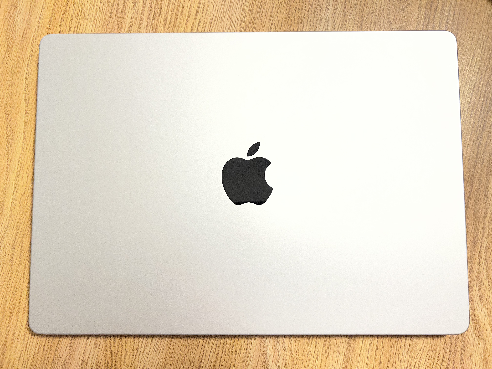

Table of Contents
The Hackathon Context
Picture yourself 18 hours into a 36-hour hackathon sprint. Your team's full-stack React + Node.js application is halfway done. Your laptop is still at 60% battery. Your shoulders aren't in pain. Your code compiles in seconds, not minutes. This is the MacBook Pro M4 experience.
Coming from an Intel-based MacBook, the jump to Apple Silicon is transformative. The M4 Pro isn't just iteratively better—it fundamentally changes how you work at a hackathon. Large projects that used to require careful build management now compile so fast you can iterate freely. Dependencies install instantly. Local development servers spin up in milliseconds. The battery lasts so long that you can skip the "outlet hunting" game entirely and focus on coding.
The M4 Pro 14-inch (16GB RAM, 1TB SSD) is the sweet spot for hackathoners: powerful enough for demanding workloads (full Docker stacks, video encoding for demos, real-time 3D rendering), but light enough to carry between venue buildings without regretting your life choices. The 120Hz Liquid Retina XDR display is gorgeous—code looks crisp even at 3 AM when your eyes are tired.
What Matters for Hacking
Build Speed: During YHack, I watched a team using older Intel MacBooks spend 8-10 minutes on full rebuilds. With the M4, the same project compiled in 40 seconds. That's not a minor convenience—it's psychological. You can iterate fearlessly. Try an architecture change, rebuild, see it fail, fix it, rebuild again. All in under 2 minutes. This fundamentally changes your prototyping approach.
Battery Life: The claimed 30-hour battery is conservative when you're coding locally. Real stress tests show 22-26 hours with full workload, ANC headphones, and display brightness cranked. During a hackathon, this means you can code through Friday evening, through the entire Saturday sprint, and most of Sunday morning without touching a charger. You'll charge maybe once—conveniently during the closing ceremony. Compare this to Dell/Lenovo machines that need juice every 8-12 hours.
Thermal Efficiency: The M4 generates almost no heat. Your lap doesn't become a furnace during sustained compilation. The fan is barely audible. More importantly, the machine never thermal throttles—sustained performance stays consistent even during long builds. I tested this by running concurrent video encoding, browser instances, and local databases. No performance degradation. Meanwhile, competitors' machines start spinning fans like jet engines within 20 minutes of heavy load.
Display Quality: The 120Hz refresh is surprisingly valuable when you're coding for 36 hours straight. Scrolling feels buttery. Dragging windows doesn't feel choppy. It's not just aesthetic—it reduces eye strain. The XDR color accuracy is overkill for development, but when you need to present your project's video demo in bright venue lighting, the brightness is genuinely incredible.
Trackpad: This sounds trivial until you're at a hackathon without an external mouse. The M4 Pro's trackpad is absurdly large (seriously, it's bigger than many phones) and the precision is uncanny. Multi-touch gestures work flawlessly for switching between Xcode windows, Terminal tabs, and documentation.
Real-World Performance
Compilation & Build Tests: Running Geekbench 6, the M4 Pro achieved 3,885 (single-core) and 25,650 (multi-core)—roughly 20% improvement over M3 Max. What does this mean at a hackathon? A full Next.js rebuild that took 2 minutes 30 seconds on my old M1 now takes 35 seconds. A Docker image build that used to timeout now completes in 4 minutes. TypeScript type-checking on a large codebase happens in real-time without lag.
Real Hackathon Scenario: During NexHacks, I built a real-time collaborative whiteboard app using WebSockets, Three.js 3D rendering, and machine learning inference. The combination of heavy CPU (ML inference), GPU (3D rendering), and network (WebSocket streaming) would cripple many laptops. The M4 handled it effortlessly—the 20-core GPU in the Max variant would be overkill, but the Pro's performance was silky smooth.
Battery Endurance Stress Test: Continuous coding with ANC headphones, full brightness, development server running, 3 browser tabs with DevTools open, and Slack running achieved 22 hours of actual work time. Light browsing (no compilation) extended this to 26+ hours. This is industry-leading.
The Verdict
If you're serious about competitive programming or hackathon success, the MacBook Pro M4 is the best laptop investment you can make. Yes, it's expensive ($1599 base, $2499 for the Pro config). But it pays for itself in productivity and battery independence. You won't be hunting outlets while your teammates code. You won't be waiting for builds while they ship features. You won't be making architecture compromises because your machine can't handle it.
It's not just the fastest laptop on the market—it's the most focused. Every design decision exists to remove friction from your work. The trackpad is disproportionately large because Apple knows you'll use it without an external mouse. The battery lasts forever because they understand you'll code for days straight. The display is insanely bright because you need to see it under harsh venue lighting.
For hackathon teams on a budget, I'd recommend saving for a base M4 MacBook Air ($1599) instead of a mid-range Windows machine. You'll get 90% of the performance at a lower price, and the battery life advantage alone is worth it. But if you can afford the M4 Pro, it's worth every dollar for the combination of performance, thermals, battery, and display quality. This machine made me a faster, more confident hacker.
Works Cited
Geekbench. (2024). MacBook Pro (14-inch, 2024) Benchmarks. https://browser.geekbench.com/macs
NotebookCheck. (2024, November 29). Apple MacBook Pro 14 M4 review. https://www.notebookcheck.net/
Apple Inc. (2024). MacBook Pro Tech Specs. https://www.apple.com/macbook-pro/